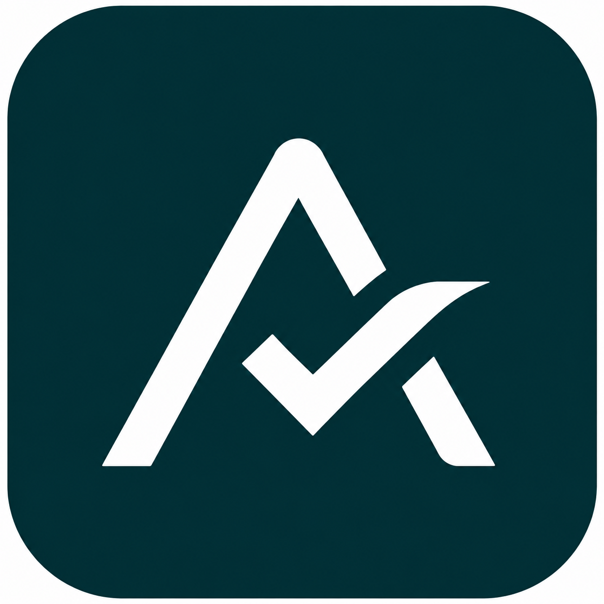

Um A de Atendly cuja perna direita é interrompida por um check — o agendamento confirmado, a conversa resolvida. Três traços, uma espessura, uma cor. A referência enviada foi simplificada: sem preenchimento, sem folha, só linha.
A referência traz um A sólido com o check integrado à perna direita e uma folha no final do traço. Mantivemos a ideia — A + check, o check escapando pela direita — e tiramos o que não sobrevive a 16 px: preenchimento, folha e a perna dupla.

Grade de 64. Traço de 6 unidades, pontas e junções arredondadas. Três caminhos: o Λ (perna esquerda + perna direita até o check), o resto da perna direita e o check.
O nome continua em Literata semibold, tracking −2%. Símbolo e nome alinham pela altura da caixa-alta. Uma cor por vez: petróleo sobre claro; papel sobre escuro ou petróleo.
Nunca duas cores no símbolo, nunca gradiente, nunca contorno extra. Em impressão monocromática, tinta sobre papel.
Petróleo com o símbolo em papel é o ícone principal (o mesmo da referência, sem a folha). Versões papel e tinta para contextos claros e para o modo escuro do sistema.
A marca é protagonista só na entrada. Dentro do app ela é discreta: canto da sidebar no desktop, topo do trilho no onboarding. As telas completas estão em Login e acesso.